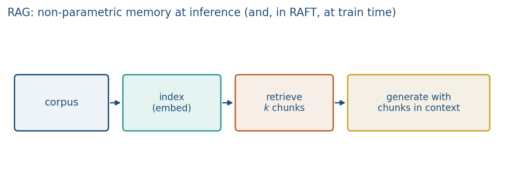

14.1 Retrieval-Augmented Generation
Index documents, retrieve chunks, then generate with those chunks in context.
These notes match the lecture slides. Use (slides) on the course hub for the deck.
RAG is retrieve, then generate. The language model does not have to store every fact in its weights. You give it chunks at request time and ask it to answer from those chunks.
1. Three stages
- Index. Split documents, embed each chunk, store vectors plus the raw text and an id.
- Retrieve. Embed the query, take top- by cosine (or a hybrid with keywords).
- Generate. Stuff the chunks into a prompt: answer the question, cite ids, say when the context is missing.

The generator is still a next-token model. RAG changes its conditioning, not its architecture. A wrong index cannot be saved by a prettier prompt. Dense embeddings (Week 1, Week 5) are one index; keyword overlap is another. Lab 14 uses counts so the ranking is something you can print.
Karpathy’s browser demo is the same loop with the web as the index: emit a search, read hits, then write. Custom GPTs that file your PDFs are the same loop with a private index.
2. What can fail
Retrieval misses the supporting chunk (recall@k). Retrieval returns a near-miss that the model then over-trusts. The model ignores a good chunk and hallucinates. Citations that do not match the used sentences are the RAG version of unfaithful CoT (note 13.3).
Chunk size, overlap, embedding choice, and are method. Lab 14 uses bag-of-words cosine so you can see the ranking without a GPU. ReAct (note 14.2) can treat retrieve as one tool among others, including a calculator.
A no-retrieval baseline is the parametric model on the same questions. If RAG does not beat it, the index or the prompt is the story, not “we added RAG.”
3. Measurement
Report retrieval recall@k on a labeled set of (question, gold chunk ids), then answer accuracy with an attribution check: does the cited id actually contain the claim? Always include a no-retrieval baseline. “We used RAG” is not a result.
4. Teaching this note
About 35 minutes at the board, then ~10 minutes of video.
- 0–12 min. Index / retrieve / generate. Cosine as the ranker. What lives in the index besides the vector.
- 12–22 min. Failure modes: miss, near-miss, ignore, unfaithful citation.
- 22–33 min. Worked cosine on three toy docs.
- Then play Karpathy intro 27:43–33:32 (tool use: browser as retrieve-then-read) and mention 40:45–42:15 (custom GPTs / files as a private index). Pause when the model emits a search and reads the hits.
5. Worked example
Three chunks, vocab {library, close, shuttle}, bag-of-words counts:
| id | text (toy) | vector |
|---|---|---|
| d1 | library close | |
| d2 | shuttle loop | |
| d3 | library hours |
Query , vector . Cosine .
Rank: d1, d3, d2. For you stuff only d1 (right chunk for a closing-time question). For you also stuff d3: recall can rise, but the generator now sees a near-miss about “hours” that may not include 23:00. Raising is not free.
If the model then cites [d2] while using the 23:00 fact from d1, that is unfaithful attribution: same bug class as CoT steps that do not match the box.
6. Where students get stuck
- Measuring only answer accuracy. You need recall@k and a citation check.
- Stuffing and wondering why the model ignores the gold chunk.
- Putting only vectors in the index and dropping the raw text / id, so you cannot cite.
7. Video
Watch Andrej Karpathy, Intro to Large Language Models, second half: 27:43–33:32 (browser / retrieval) and 40:45–42:15 (customization with files).
Pause on emit-search → read hits → write with sources. Same URL as notes 13.1, 14.2, and 15.1. This note is the retrieve-then-generate picture; 14.2 is the tool loop.
8. Practice
-
Why can raising hurt the answer even if it raises recall?
-
You retrieve the right chunk and the answer is still wrong. Name two different bugs.
-
What belongs in the index besides the embedding vector?
-
Using the three vectors above, compute exactly as a fraction, and write the id list.
-
Gold chunk is d1. Retrieved top-2 are d3, d2. Recall@2 for this item? Answer cites
[d1]. Attribution pass or fail?